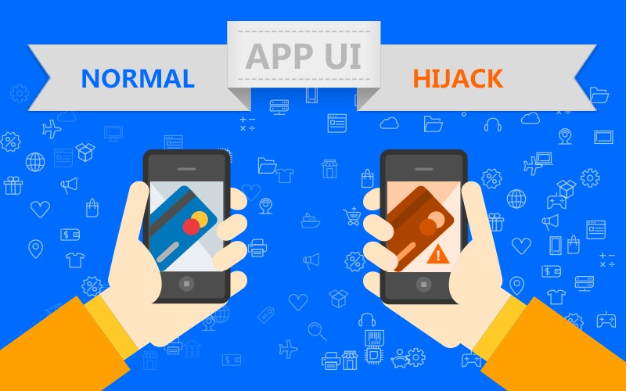

CSLG IT laboratory
防界面劫持SDK
利用仿冒的界面覆盖、替换App原界面来进行钓鱼欺诈，正在成为一种流行的App恶意攻击方式，即界面劫持攻击
| App界面风险:
在登录或使用交易类App，特别是金融客户端时， 界面劫持性攻击会让用户在毫无察觉的情况下，将个人账号、密码、银行卡号、手机号码、 身份证号码等敏感信息提供给攻击者，而用户仍然以为他们在正常的App系统上操作。 许多恶意程序通过这种“界面劫持”的攻击方式窃取用户敏感信息，对银行、互联网金融、 证券、游戏等交易类App危害巨大。 | 界面劫持原理及危害:
- 用户账号
- 信用卡号
- 身份证号码
- 邮箱地址
- 家庭成员信息
- 商业机密信息
- 登录密码
- 银行卡号
- 手机号码
- 短信验证码
- 家庭住址信息
- 公司地址信息
以移动金融、手机网游、社交、移动购物为例，App界面劫持的主要攻击原理：
■ 捕获当前运行进程，循环匹配目标
■ 监听系统logcat日志，分析界面切换边界
■ 监听系统API，匹配目标行为
■ 屏蔽、覆盖App界面，以仿冒界面取代App原生界面
■ 输入数据记录、发送、转移
■ 用户数据破解、诈骗、贩卖
| 防界面劫持SDK:
梆梆安全防界面劫持SDK，根据App当前界面视图焦点的变化，捕获当前恶意程序的攻击行为，提醒用户安全风险，有效降低移动App敏感信息被窃取风险。主要功能特点：
■ Activity实时监测拦截
■ Windows实时监测拦截
■ 键盘行为监测及数据分析
■ 仿冒界面风险提示
■ 防误判白名单
| 支持的平台:
• 支持Android系统• 支持X86 CPU
• 支持阿里云手机、小米定制OS、腾讯定制OS、魅族定制OS等定制系统
cslgit©2016 Bootstrap 响应式网络安全服务 | 版权所有️